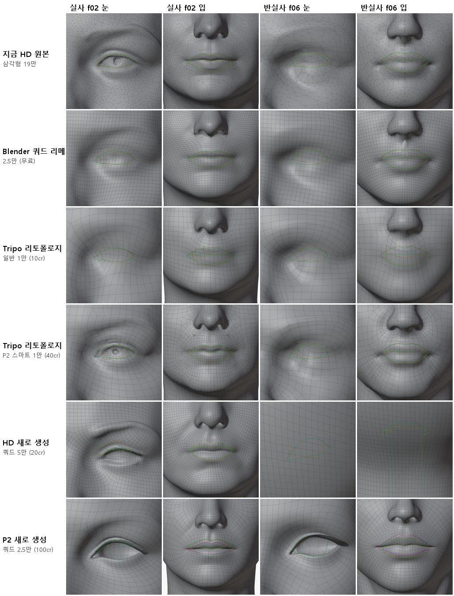
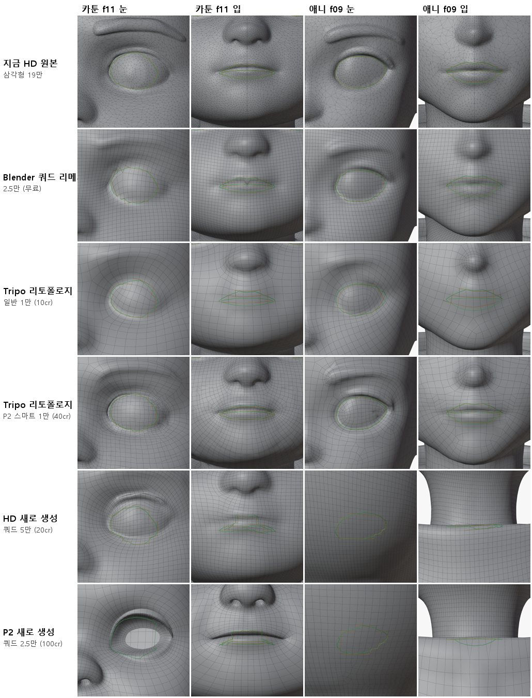
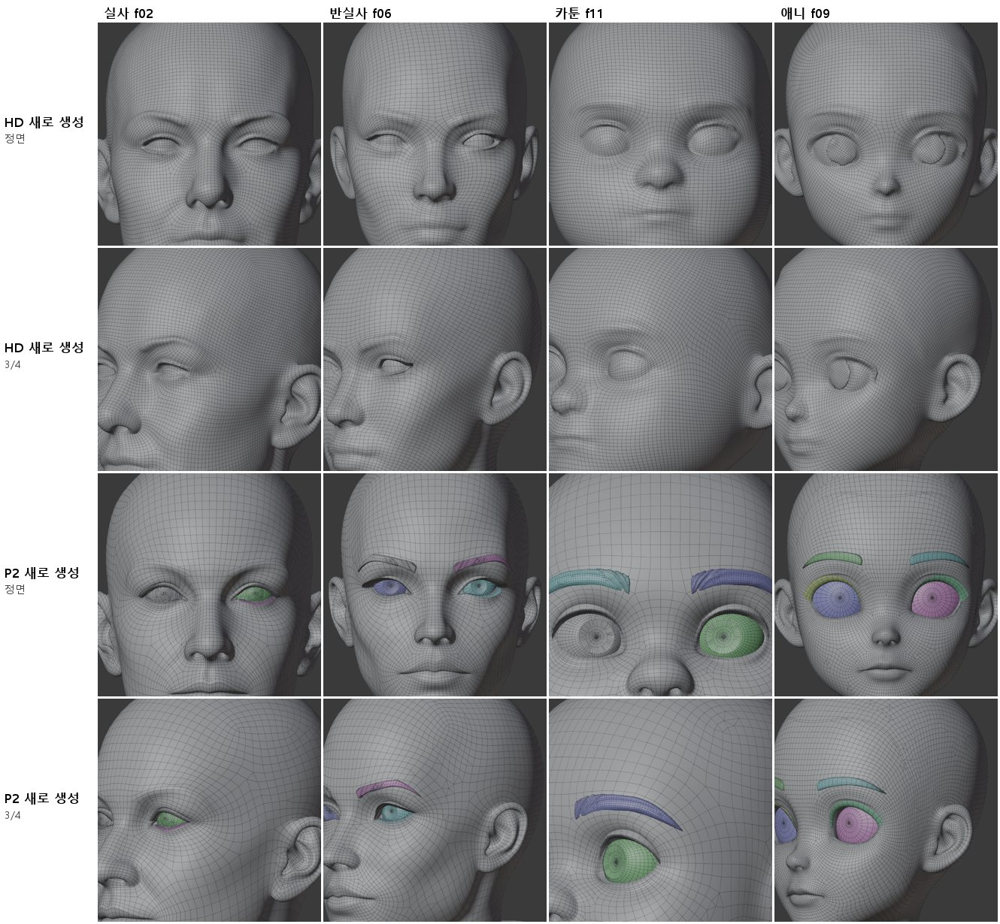

<title>깨끗한 원본 비교</title>
<link rel="preconnect" href="https://fonts.googleapis.com">
<link rel="preconnect" href="https://fonts.gstatic.com" crossorigin>
<link rel="stylesheet" href="https://fonts.googleapis.com/css2?family=IBM+Plex+Mono:wght@400;500&family=IBM+Plex+Sans+KR:wght@400;500;600;700&display=swap">
<style>
/* Layout: one reading column; figures full width of the column */
:root{--bg:#F5F6F8;--paper:#fff;--ink:#1B1F27;--muted:#5B6473;--line:#DDE1E8;--soft:#EEF1F6;--accent:#2F5BD3;--good:#1E8A52;--bad:#C83A32;--warn:#B26A00;
--f-body:"IBM Plex Sans KR","Malgun Gothic",system-ui,sans-serif;--f-mono:"IBM Plex Mono",ui-monospace,Consolas,monospace}
@media (prefers-color-scheme: dark){:root:not([data-theme="light"]){--bg:#12151B;--paper:#191D25;--ink:#E5E8EE;--muted:#9BA4B3;--line:#2B313C;--soft:#20252F;--accent:#7FA2FF;--good:#5ACB8C;--bad:#FF6F66;--warn:#F0AE48;color-scheme:dark}}
:root[data-theme="dark"]{--bg:#12151B;--paper:#191D25;--ink:#E5E8EE;--muted:#9BA4B3;--line:#2B313C;--soft:#20252F;--accent:#7FA2FF;--good:#5ACB8C;--bad:#FF6F66;--warn:#F0AE48;color-scheme:dark}
*{box-sizing:border-box}
body{background:var(--bg);color:var(--ink);font-family:var(--f-body);font-size:16px;line-height:1.7}
main{max-width:920px;margin:0 auto;padding-inline:16px;padding-block:26px 60px}
h1{font-size:clamp(25px,4vw,33px);margin:0;line-height:1.25;text-wrap:balance}
.sub{color:var(--muted);margin:6px 0 0}
h2{font-size:21px;margin:38px 0 6px;text-wrap:balance}
h3{font-size:17px;margin:20px 0 4px}
p,ul,ol{max-width:72ch} li{margin:3px 0}
figure{margin:16px 0;background:var(--paper);border:1px solid var(--line);border-radius:12px;padding:12px}
figure img{display:block;width:100%;height:auto;border-radius:6px;background:#2a2a2e}
figure img.narrow{max-width:560px;margin:0 auto}
figure svg{display:block;width:100%;height:auto}
figcaption{font-size:14px;color:var(--muted);margin-top:8px}
figcaption b{color:var(--ink)}
.tbl{overflow-x:auto;margin:12px 0}
table{border-collapse:collapse;font-size:14.5px;min-width:540px;width:100%;background:var(--paper)}
th,td{border:1px solid var(--line);padding:6px 10px;text-align:left;vertical-align:top}
th{background:var(--soft)}
td.num{font-family:var(--f-mono);font-variant-numeric:tabular-nums;white-space:nowrap}
.good{color:var(--good);font-weight:600}.bad{color:var(--bad);font-weight:600}.warn{color:var(--warn);font-weight:600}
.box{background:var(--paper);border:1px solid var(--line);border-left:4px solid var(--accent);border-radius:0 10px 10px 0;padding:12px 16px;margin:14px 0}
code{font-family:var(--f-mono);font-size:13.5px;background:var(--soft);padding:1px 5px;border-radius:4px;overflow-wrap:anywhere}
svg text{font-family:var(--f-body)}
.s-ink{fill:var(--ink)}.s-muted{fill:var(--muted)}.s-paper{fill:var(--paper)}.s-soft{fill:var(--soft)}.s-acc{fill:var(--accent)}.s-good{fill:var(--good)}.s-bad{fill:var(--bad)}
.st-acc{stroke:var(--accent)}.st-good{stroke:var(--good)}.st-ink{stroke:var(--ink)}.st-muted{stroke:var(--muted)}.st-bad{stroke:var(--bad)}
</style>
<style>
.chip{display:inline-block;font-size:12.5px;font-weight:600;padding:1px 8px;border-radius:999px;border:1px solid var(--line);background:var(--soft);white-space:nowrap}
.chip.ok{color:var(--good)}.chip.part{color:var(--warn)}.chip.no{color:var(--bad)}.chip.todo{color:var(--muted)}
.svgwrap{overflow-x:auto}
.svgwrap svg{min-width:640px}
</style>
<main>
<h1>깨끗한 원본 비교 (쿼드 토폴로지)</h1>
<p class="sub">2026-10-12 · 실사 f02 · 반실사 f06 · 카툰 f11 · 애니 f09 · Tripo 크레딧 970 사용 (승인 2,000, 잔액 22,165 → 21,195)</p>

<div class="box"><b>결론</b>
<ul>
<li><b>추천: Tripo 스마트 메시 P2로 새로 생성(쿼드 2.5만, 머리당 100크레딧)한 메시를 새 원본으로 쓰는 것.</b> 눈 구멍이 이미 뚫려 있고, 안구·눈썹·눈꺼풀·입속이 따로 나오며, 눈과 입 둘레에 동심원 고리가 있습니다. "깨끗한 원본을 뽑아 겹치고 자르기만 한다"는 방식에 그대로 맞습니다.</li>
<li><b>단, 새 머리입니다.</b> 지금 HD 원본과 얼굴 모양이 6~9mm 다르고, 좌우 대칭이 아니며(대칭화 필요), 피부 조각에 구멍과 비다양체 모서리가 있습니다(조각 경계). 그림과 닮았는지 따로 확인해야 합니다.</li>
<li><b>지금 얼굴을 그대로 지켜야 하면</b>: Tripo 리토폴로지 + 스마트 메시 P2(머리당 40크레딧). 모양 차이 95% 값 0.6~0.8mm로 원본을 지키고 눈 둘레가 촘촘하지만, 최대 1만 면이고 눈·입을 완전히 감싸는 고리는 생기지 않습니다.</li>
<li><b>권하지 않음</b>: Blender 쿼드 리메시(무료)·Tripo 일반 리토폴로지는 격자가 눈·입을 가로질러 지나가고 눈 모양이 뭉개집니다. HD 새 생성 쿼드는 고른 격자일 뿐 눈이 피부에 덮여 붙어 나옵니다.</li>
</ul></div>

<h2>1. 무엇을 비교했나</h2>
<p>사용자 지적(2026-10-12): 지금 방식은 불규칙한 삼각형 원본(약 19만 면) 위에 눈·입 고리를 새로 짜 넣으면서 일그러짐·움푹 꺼짐·불완전한 이음새가 생깁니다. 처음부터 깨끗한 폴리곤 원본을 받아 겹치고 자르기만 하는 방법을 찾기 위해, 가능한 방식을 4개 머리에 모두 돌렸습니다.</p>
<div class="tbl"><table>
<tr><th>방식</th><th>입력</th><th>비용(머리당)</th><th>결과 면 수</th></tr>
<tr><td>지금 HD 원본</td><td>그림 1장 → H3.1 (이전에 만든 것)</td><td>-</td><td>삼각형 약 19만</td></tr>
<tr><td>Blender 쿼드 리메시 (QuadriFlow, 대칭)</td><td>대칭 원본, 머리만 자름</td><td>0</td><td>쿼드 2.1~2.5만</td></tr>
<tr><td>Tripo 리토폴로지 일반</td><td>대칭 원본 머리를 올림</td><td>10</td><td>쿼드 약 0.94~0.97만</td></tr>
<tr><td>Tripo 리토폴로지 + 스마트 메시 P2</td><td>대칭 원본 머리를 올림</td><td>40</td><td>쿼드 약 0.90~0.95만</td></tr>
<tr><td>HD(H3.1) 새로 생성, 쿼드</td><td>4방향 그림(정면·왼쪽·오른쪽·뒤)</td><td>20</td><td>쿼드 4.3~4.7만</td></tr>
<tr><td>스마트 메시 P2 새로 생성, 쿼드</td><td>4방향 그림</td><td>100</td><td>쿼드 2.6~2.8만 (조각 6~21개)</td></tr>
</table></div>
<p>Studio 화면에서 확인한 옵션: HD 모델은 토폴로지 쿼드/삼각형과 면 수(쿼드 500~5만)를 고를 수 있습니다. 스마트 메시 P2는 쿼드 500~2.5만, 생성 개수 1·2·4를 고릅니다. 리토폴로지 도구는 올린 모델을 쿼드 500~1만으로 바꾸고, 스마트 메시 P2를 켜면 40, 끄면 10크레딧입니다.</p>

<h2>2. 측정</h2>
<p>평가 도구 <code>tools/face_auto/topo_eval.py</code>(새로 만듦): 결과 메시를 원본 머리(머리만 자른 대칭 원본)에 맞춘 뒤 면 수·쿼드 비율·구멍·대칭·모양 차이와, 눈 테두리·입술 선을 따라 닫힌 고리가 있는지 잽니다. 고리 판정은 "Blender 고리 선택으로 고를 수 있는 닫힌 고리가 윤곽에서 평균 1mm·최대 2mm 안에 있는가"입니다(시험용 구에서 정확히 찾는 것을 확인).</p>
<div class="tbl"><table>
<tr><th>방식</th><th>쿼드 비율</th><th>얼굴 모양 차이 95%</th><th>눈 둘레 모양 차이 95%</th><th>눈가 모서리 길이</th><th>눈·입 닫힌 고리</th><th>좌우 대칭</th><th>조각</th></tr>
<tr><td>지금 HD 원본</td><td>1% 미만</td><td>0</td><td>0</td><td>1.5~4.0mm</td><td>없음 (삼각형)</td><td>대칭화함</td><td>1</td></tr>
<tr><td>Blender 쿼드 리메시 2.5만</td><td>100%</td><td>0.18~0.25mm</td><td>0.6~1.3mm</td><td>약 3mm</td><td>없음 (격자가 가로지름)</td><td>정확히 대칭</td><td>1</td></tr>
<tr><td>Tripo 리토폴로지 일반</td><td>100%</td><td>0.53~0.56mm</td><td>0.8~1.7mm</td><td>4.1~4.4mm</td><td>없음</td><td>아님</td><td>1</td></tr>
<tr><td>Tripo 리토폴로지 + P2</td><td>92~95%</td><td>0.59~0.76mm</td><td>0.6~0.9mm</td><td>1.7~4.3mm</td><td>부분 (눈가 촘촘)</td><td>아님</td><td>1</td></tr>
<tr><td>HD 새로 생성 쿼드</td><td>100%</td><td>8.2~8.7mm (새 머리)</td><td>-</td><td>1.7~4.0mm</td><td>없음, 눈이 피부에 덮임</td><td>아님</td><td>1</td></tr>
<tr><td>P2 새로 생성 쿼드</td><td>88~93%</td><td>6.8~8.7mm (새 머리)</td><td>-</td><td>0.9~4.1mm</td><td>입 둘레 동심원 고리 4~5개(f02·f06에서 측정), 눈 구멍이 뚫림</td><td>아님</td><td>6~21 (안구·눈썹·눈꺼풀·입속)</td></tr>
</table></div>
<p>새로 생성한 두 방식은 원래 원본과 다른 새 머리라서, 원래 원본의 눈·입 윤곽으로 재는 고리 수치는 참고만 됩니다(윤곽 자체가 6~9mm 어긋남). 그림 3처럼 각자 좌표계에서 직접 보는 것이 정확합니다.</p>
<figure><figcaption><b>그림 1.</b> 눈·입 확대 와이어, 실사 f02와 반실사 f06. 위에서부터 지금 HD 원본, Blender 쿼드 리메시, Tripo 리토폴로지 일반, 리토폴로지+P2, HD 새 생성, P2 새 생성입니다. 초록은 원래 원본의 윤곽, 주황은 그 윤곽에 가장 가까운 모서리 길, 자홍은 찾은 닫힌 고리입니다. 새 생성 두 줄은 다른 머리라 칸 위치가 어긋날 수 있습니다(f06 HD 새 생성 칸은 정렬 실패).</figcaption></figure>
<figure><figcaption><b>그림 2.</b> 같은 비교, 카툰 f11과 애니 f09. 리토폴로지+P2(4번째 줄)는 원래 모양을 지키면서 눈가가 촘촘합니다. P2 새 생성(맨 아래)은 f11에서 눈 구멍이 뚫리고(흰 부분) 그 둘레를 고리가 감쌉니다. f09 새 생성 두 칸은 정렬 실패로 목이 보입니다.</figcaption></figure>
<figure><figcaption><b>그림 3.</b> 새로 생성한 메시를 정렬 없이 각자 좌표에서 본 것(조각마다 색). HD 새 생성(위 2줄)은 고른 쿼드 격자이고, 눈이 피부에 덮여 붙어 있으며 f06·f09는 눈 모양이 어색합니다. P2 새 생성(아래 2줄)은 안구(파랑·분홍·초록), 눈썹, 눈꺼풀이 따로 나오고 눈 둘레를 고리가 감쌉니다. f02는 한쪽 안구만 따로 나왔습니다.</figcaption></figure>

<h2>3. 크레딧과 실수</h2>
<div class="tbl"><table>
<tr><th>항목</th><th>건수</th><th>크레딧</th></tr>
<tr><td>리토폴로지 일반 (머리 4 + 처음 올린 f02 상반신 1)</td><td>5</td><td>50</td></tr>
<tr><td>리토폴로지 + 스마트 메시 P2</td><td>4</td><td>160</td></tr>
<tr><td>HD 새로 생성 쿼드 (올바른 4 + 잘못된 4)</td><td>8</td><td>160</td></tr>
<tr><td>P2 새로 생성 쿼드 (올바른 4 + 잘못된 2)</td><td>6</td><td>600</td></tr>
<tr><td><b>합계</b></td><td>23</td><td><b>970</b> (잘못된 것 280 포함)</td></tr>
</table></div>
<p><b>실수</b>: 4방향 입력 칸의 화면 순서가 왼쪽·<b>오른쪽</b>·뒷면인데 왼쪽·뒷면·오른쪽 순서로 넣어, 처음 HD 4건과 P2 2건은 오른쪽과 뒷면 그림이 바뀐 채 생성됐습니다(280크레딧). 칸의 이름표를 화면에서 읽어 확인한 뒤 모두 올바른 순서로 다시 생성했고, 바뀐 결과는 비교에서 뺐습니다. 또 f06 원본이 전신이라 처음에 상반신째 올리려다 취소하고, 4개 모두 턱 아래 8cm까지 머리만 잘라 올렸습니다.</p>

<h2>4. 다음 단계 (P2 새 원본을 고를 경우)</h2>
<ol>
<li>P2 결과가 그림과 닮았는지 확인(정면 그림과 겹쳐 보기, 기준점 비교).</li>
<li>좌우 대칭화: 왼쪽 반의 고리 구조를 거울 복사해 고리를 유지한 채 대칭으로(지금 <code>sym_mirror.py</code> 방식, 면 방향·가운데 선 처리 수정판).</li>
<li>눈: 이미 뚫린 눈 구멍과 따로 나온 안구·눈꺼풀을 그대로 씀. 눈꺼풀 가장자리 고리를 감기 계산(<code>ring_blink</code>)의 고리로 지정.</li>
<li>입: 입술 둘레 고리 중 입술 틈 고리를 골라 그 선만 잘라 위·아래 입술을 나눔. 입속·이·혀는 P2 조각 또는 새 이·잇몸·혀(<code>organ_teeth.py</code> v2)를 씀.</li>
<li>리그: 촘촘한 리그(뼈 129개, 눈꺼풀·입술 관절을 고리 위에) → 표정 42개 + 눈 감기 + 눈 굴리기 8개.</li>
</ol>

<h2>5. 파일</h2>
<ul>
<li>평가 도구: <code>tools/face_auto/topo_eval.py</code>. 결과: 임시 폴더 <code>m1/topo/eval/&lt;방식&gt;/&lt;머리&gt;/topo_qa.json</code>와 와이어 그림, 표 <code>m1/topo/table.md</code>.</li>
<li>받은 메시 16개: <code>m1/topo/dl/</code> (FBX, 18MB). Tripo 에셋에도 남아 있습니다.</li>
</ul>
</main>
